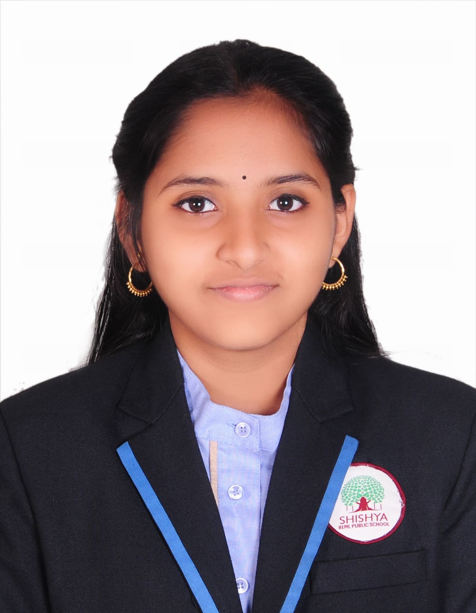

OPEN TO INTERNSHIP OPPORTUNITIES
HELLO, WORLD. I'M
Taranya
Saravanan.
I build intelligent systems|
Computer Science student, AI & robotics enthusiast, and curious builder turning ambitious ideas into useful technology.
BUILD.LOG● LIVE

TSCuriosity → Code → Impact
LEARNING. BUILDING. ITERATING.
✳ ARTIFICIAL INTELLIGENCE
⌘ ROBOTICS & IOT
01 / 04
01 / ABOUT ME
Curiosity is my
starting point.
I'm a Computer Science Engineering student at Cambridge Institute of Technology, Bengaluru, passionate about building technology that solves meaningful problems.
My interests span artificial intelligence, machine learning, robotics, embedded systems and full-stack development. I enjoy moving beyond ideas — prototyping, testing, learning from failure and shipping working solutions.
Currently exploring the space where intelligent software meets the physical world.
07+PROJECTS BUILT
04HACKATHONS
9.3SEM 1 SGPA
∞THINGS LEFT TO BUILD
02 / TOOLKIT
My technical playground.
A growing toolkit for turning concepts into real-world solutions.
AI & Data
Web & Software
Hardware & Design
03 / SELECTED WORK
Ideas into impact.
A selection of things I've been building.
01 / AI AGENTS↗
BLOOM / AGENTIC AIMCPA2AGEMINI
Bloom
An agentic AI platform built with orchestrated agents, interoperable communication and standardized tool access.
VIEW ON GITHUB ↗02 / EDGE AI↗
EDUBUDDYAsk. Learn. Grow.● OFFLINE MODE
VOICE · LEARNING · PRIVACYEduBuddy
An offline multilingual AI voice tutor that answers textbook-grounded questions in English, Hindi and Tamil — designed for learning without internet access.
VIEW ON GITHUB ↗03 / SPACE TECH↗
✣
EARTH OBSERVATION / AIR QUALITYSatellite AQI & HCHO
An environmental intelligence project exploring satellite-based air-quality and formaldehyde data.
VIEW ON GITHUB ↗04 / COMPUTER VISION↗
SEE THE PROBLEM. MEASURE THE IMPACT.
GarbEdge
A street-waste severity analyzer that classifies uploaded images into actionable severity levels with explanations.
VIEW ON GITHUB ↗MORE EXPERIMENTS, PROTOTYPES & BUILDSEXPLORE ALL REPOSITORIES ↗
04 / MILESTONES
Learning by doing.
Every build, competition and collaboration adds a new perspective.
OCT 2026 · INDONESIA
INTERNATIONAL · IEEE
IEEE YESIST12 2026 — Grand Finale
Participated as a finalist in the Maker Fair Track at the international grand finale in Bekasi, Indonesia, presenting EduBuddy.
SEP 2026 · VIT
HACKATHON · TEAMWORK
VIT GRAVITAS — Celestia 2.0
Participated in the hackathon with teammates Mokesh A, Divya S M and Noel Pandian.
2026 · BENGALURU
OPEN INNOVATION · TOP 10
PulseX Open Innovation Hackathon
GarbEdge advanced to the top 10 and secured a place in the direct second round.
2025 — PRESENT
EDUCATION
Cambridge Institute of Technology
Computer Science Engineering · Bengaluru, India.
ALWAYS LEARNING
CONNECT FOR CREDENTIALS ↗Certifications & workshops
Prompt Engineering · Salesforce Developer Workshop
05 / WHAT'S NEXT?
HAVE A PROJECT, IDEA OR OPPORTUNITY?
Let's build
what's next.
I'm always excited to connect with people building thoughtful technology. Let's make something meaningful.
Say hello ↗